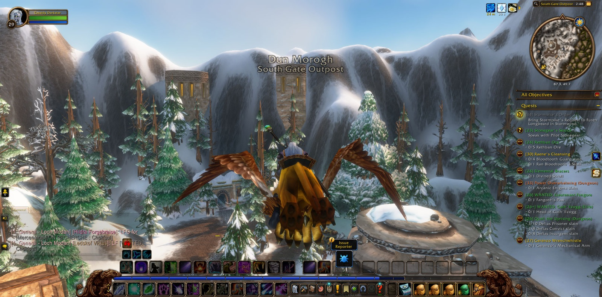

Cassidy Darkstar went out from the Deepwater Tavern in Menethil Harbor and took the road to Ironforge. In Tinker Town and the Hall of Explorers he laid down old errands: Castpipe's Task, Klockmort's Essentials, and Knowledge in the Deeps, which he gave up in the Forlorn Cavern. From there the road ran south through Searing Gorge and the Burning Steppes into Elwynn Forest and Stormwind, where Retrieval for Mauren was ended in the Mage Quarter, and so on east to Lakeshire in the Redridge Mountains. There he recovered Oslow's toolbox from Lake Everstill, gathered iron rivets and iron pikes in the Redridge Canyons for the Everstill Bridge, and at Alther's Mill slew the greater tarantulas and broke their eggs. At Stonewatch Keep he fell once. Aimes, Angry, Thordin and Shadow went beside him there for a brief while before each went his own way.


Then he took up the long errand of the Defias Brotherhood. Wiley's note went to Gryan Stoutmantle in Sentinel Tower, and from there to Mathias Shaw in the shadowed house of SI:7. Shaw's report went back again to Westfall, and in Moonbrook a mysterious message was found that brought the matter to its end. In Kharanos he finished The Day After and was set upon the road toward Gnomeregan, where he first went down to the Train Depot among the addled lepers. Then he turned east through the North Gate into Loch Modan. At Algaz Station he delivered Stormpike's charge and won back the miners' gear from Silver Stream Mine. He found Bingles by the Loch and gathered his scattered tools, and he walked every corner of that country until all of Loch Modan was known to him. In Thelsamar he ended the Rat Catching.


Back in Dun Morogh he gathered wendigo manes in the Grizzled Den and stolen blasting powder about Gol'Bolar Quarry and Helm's Bed Lake. Then he carried Stormpike's Order to the Dwarven District of Stormwind. Below that city lay the Stormwind Stockade, and there the greater deed of the day was done. Blessed the priest went in with him first. After her came Licht the paladin, Kaidie the rogue, Shinon the hunter and Zeno, a druid like himself, who were his companions through most of that labour, and Garrett the warrior joined them near its close. Together they quelled the uprising of convicts, prisoners and insurgents. They overcame Targorr the Dread, Kam Deepfury, Hamhock and Bazil Thredd, took the hand of Dextren Ward, and gathered the red bandanas. Cassidy took many pictures there, as if to keep the memory whole. Then in Old Town he came into new strength and stood at the thirtieth mark of his road.


Lighter errands followed, for Hallow's End was abroad. He flexed for Innkeeper Allison for Stormwind nougat, and then passed by way of Nighthaven in Moonglade, Darkshore and Rut'theran Village to Darnassus, his own people's city. There he danced for Innkeeper Saelienne and was given marzipan. Then he returned to Ironforge, where Rambleon the hunter joined him and stayed the longest of all his company. With Wes, Banished and Natalya, and Maru for a moment, they went down again into Gnomeregan, through the Clockwerk Run and the Hall of Gears. When the deeps had been tried once more, Cassidy came back to the mouth of Gnomeregan, and the halls of the gnomes lay open before him still.
